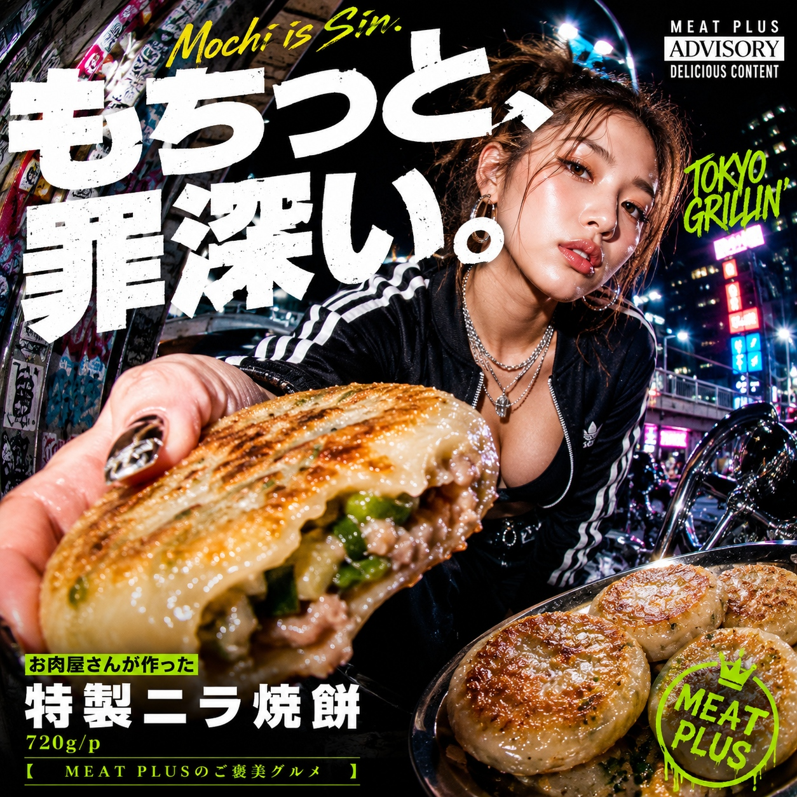
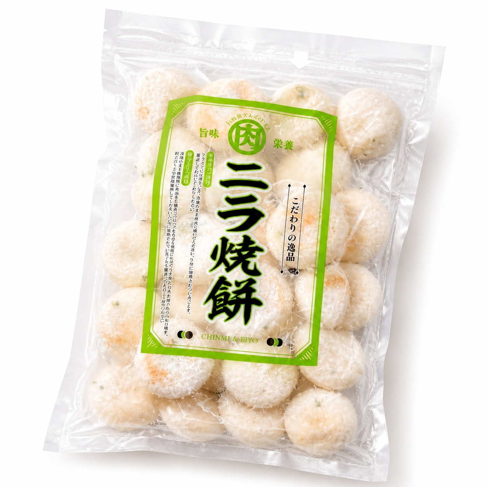

SCENE 01

i 惣菜・加工品
お肉屋さんが作った特製ニラ焼餅
【商品名案】 1. お肉屋さんが作った特製ニラ焼餅 もちもち食感と豚肉の旨味たっぷり 720g 大容量 冷凍惣菜 簡単調理 おかず おつまみに 2. 食卓の主役にもう一品！プロの味 特製ニラ焼餅 720g もちもちジューシーな冷凍惣菜 お肉屋さんの本格点心 3. 国産野菜と豚肉使用 お肉屋さんのこだわり ニラ焼餅 720g 冷凍ストックに便利！焼くだけ簡単 もちもち食感のお惣菜 【キャッチコピー】 皮はもっちり、中はジューシー。肉の旨味溢れる特製ニラ焼餅。 【商品説明文】 今夜のおかずに、もう一品プラスしたい時。冷凍庫にこれさえあれば、あっという間に食卓が華やぎます。お肉屋さんが本気で考えた特製ニラ焼餅は、まず皮が違います。餅粉と米粉を独自に配合し、こんにゃく加工品を加えることで実現した、驚くほどのもちもち食感。その皮に練り込まれたニラの風味が、食欲をそそります。中から溢れ出すのは、国産キャベツの甘みと豚肉の濃厚な旨味。醤油ベースの特製だれでしっかりと味付けされた餡は、にんにくや生姜がアクセントとなり、ご飯もお酒も進むこと間違いなし。ビーフの香味を加えることで、お肉屋さんならではの深みとコクを引き出しました。調理はフライパンで焼くだけと、とっても簡単。720gの大容量パックなので、ご家族みんなで楽しんだり、お弁当のおかずにしたりと、様々なシーンでお役立ていただけます。冷凍庫に常備しておきたい、我が家の新しい定番。専門店の味を、ぜひご家庭の食卓でお楽しみください。 【おススメポイント】 ・【お肉屋さんのこだわり】豚肉の旨味と国産野菜の甘みを最大限に引き出した、ジューシーでコク深い特製餡。ご飯にもお酒にも相性抜群です。 ・【やみつきのもちもち食感】餅粉と米粉を独自配合した皮は、外はカリッと、中は驚くほどもちもち。皮に練り込まれたニラの風味が食欲をそそります。 ・【調理は焼くだけ簡単】冷凍庫から出してフライパンで焼くだけ。忙しい日の夕食、お弁当のおかず、おつまみなど、手軽にもう一品プラスできます。 ・【たっぷり使える大容量】ご家族みんなで楽しめる720gの大容量パック。冷凍で長期保存（発送日より3ヶ月）が可能なので、ストックしておけばいつでも専門店の味を楽しめます。 【FAQ】 1. 上手な焼き方を教えてください。 冷凍のまま、油をひいたフライパンに並べ、少量の水を加えて蓋をして蒸し焼きにします。水分が飛んだら蓋を取り、両面にこんがりと焼き色がつくまで焼いてください。お好みでごま油を垂らすと、より風味豊かに仕上がります。 2. タレはついていますか？そのままで美味しいですか？ 商品にタレは付属しておりません。餡にしっかりとした味付けがされているため、そのままで美味しくお召し上がりいただけます。お好みで酢醤油やポン酢、ラー油などをつけても、さっぱりとまた違った味わいをお楽しみいただけます。 【商品情報】 商品名: お肉屋さんが作った特製ニラ焼餅 商品規格: 720g/p 原材料: 皮（餅粉、調整ラード、米粉、こんにゃく加工品、ニラ、食塩、小麦でん粉加工品、粉末油脂）、野菜（キャベツ（国産）、ニラ、にんにく）、豚肉、パン粉、醤油、植物油脂、みりん風調味料、砂糖混合異性化液糖、ビーフ香味調味料、おろし生姜、食塩、香辛料/加工デンプン、ソルビット、増粘剤（加工デンプン）、調味料（アミノ酸等）、着色料（カラメル、カロチノイド）、香料、甘味料（甘草、ステビア）酸味料（一部に、豚肉・乳成分・大豆・小麦・鶏肉・ごまを含む） 原産国: 日本 製造地: 日本 賞味期限: 発送日より3ヶ月
公式サイトへ移動します。価格・在庫・配送条件は移動先で最終確認してください。

PRODUCT INFORMATION
皮（餅粉、調整ラード、米粉、こんにゃく加工品、ニラ、食塩、小麦でん粉加工品、粉末油脂）、野菜（キャベツ（国産）、ニラ、にんにく）、豚肉、パン粉、醤油、植物油脂、みりん風調味料、砂糖混合異性化液糖、ビーフ香味調味料、おろし生姜、食塩、香辛料/加工デンプン、ソルビット、増粘剤（加工デンプン）、調味料（アミノ酸等）、着色料（カラメル、カロチノイド）、香料、甘味料（甘草、ステビア）酸味料（一部に、豚肉・乳成分・大豆・小麦・鶏肉・ごまを含む）
MEAT PLUS OFFICIAL SHOP
仕入れ・加工・梱包・発送まで自社で行うMEAT PLUSの公式オンラインショップでご注文いただけます。
公式オンラインショップで購入する